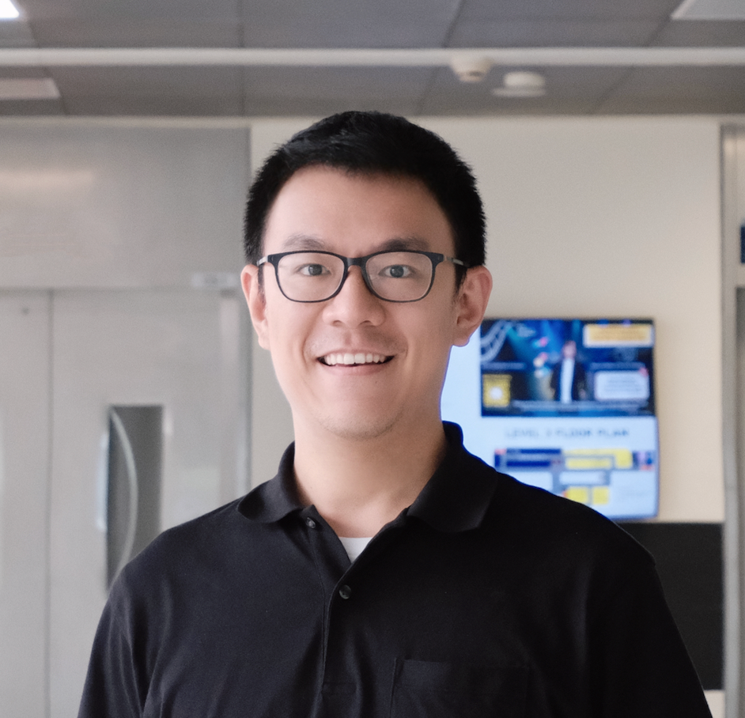

Zhengyuan Liu
Team Lead, Centre for Frontier AI Research (CFAR) Agency for Science, Technology and Research (A*STAR), Singapore IEEE Senior Member
“Imagination is more important than knowledge.” — Albert Einstein

Key Research Directions
I believe artificial intelligence should serve humanity and the social good, and that comes from transparency, alignment, and broad collaboration. We pursue AI that is accessible, reliable, responsible, and mechanistically explainable, empowering people rather than replacing them.
Driven by a commitment to AI for humanity, I am personally deeply interested in boosting collaborative intelligence between carbon-based and silicon-based minds to make new hypotheses and discoveries across the life sciences, ultimately transforming human health and well-being.
🎓 We are offering PhD opportunities (e.g., A*STAR AGS Scholarship) and co-supervision (e.g., RSS, IGP), and actively looking for Research Interns (both full-time and part-time) and CSC visiting students. If interested, please email me your CV!
Recent News
- Jul 2026 — Our work “Can Persona-Prompted LLMs Emulate Subgroup Values? An Empirical Analysis of Generalisability and Fairness in Cultural Alignment” is published in ACL 2026. [Paper]
- Jul 2026 — Our work “MMAC: A Multilingual, Multimodal Alignment Framework for Cultural Grounding Evaluation” is published in ACL 2026. [Paper]
- Jul 2026 — Our work “Programming over Thinking: Efficient and Robust Multi-Constraint Planning” is published in ACL 2026. [Paper]
- Jul 2026 — Our work “Leveraging LLMs for Dynamic Engagement Pattern Recognition in Collaborative Learning” is published in AIED 2026. [Paper]
- Mar 2026 — Our work “BLEnD-Vis: Benchmarking Multimodal Cultural Understanding in Vision Language Models” is published in EACL 2026. [Paper]
- Feb 2026 — Our work “Minimal Clips, Maximum Salience: Long Video Summarization via Key Moment Extraction” is published in IWSDS 2026. [Paper]
- Jan 2026 — Our work “AdaMCoT: Rethinking Cross-Lingual Factual Reasoning Through Adaptive Multilingual Chain-of-Thought” is published in AAAI 2026. [Paper]
- Dec 2025 — Our SingaX team (A*STAR, NTU, NUS) won the 2nd prize 🏅 in the Embodied Agent Interface (EAI) Challenge in NeurIPS 2025. [Award Link]
- Nov 2025 — Our work “Persuasion Dynamics in LLMs: Investigating Robustness and Adaptability in Knowledge and Safety with DuET-PD” is published in EMNLP 2025. [Paper]
- Nov 2025 — Our work “CCL-XCoT: An Efficient Cross-Lingual Knowledge Transfer Method for Mitigating Hallucination Generation” is published in EMNLP 2025. [Paper]
- Jun 2025 — Presented our work “COGENT: A Curriculum-oriented Framework for Generating Grade-appropriate Educational Content” in BEA 2025. [Paper]
- May 2025 — Presented our work “SingaKids: A Multilingual Multimodal Dialogic Tutor for Language Learning” in ACL 2025 (Oral). [Paper]
- May 2025 — Our work “Reinforcing Compositional Retrieval: Retrieving Step-by-Step for Composing Informative Contexts” is published in ACL 2025. [Paper]
- Mar 2025 — Our work “Scaling Up Collaborative Dialogue Analysis: An AI-driven Approach to Understanding Dialogue Patterns in Computational Thinking Education” got published in LAK 2025. [Paper]
- Jan 2025 — Our paper “CrossIn: An Efficient Instruction Tuning Approach for Cross-Lingual Knowledge Alignment” won the 🏅 Best Paper Award in SumEval@COLING 2025. [Paper]
- Nov 2024 — Our paper “Learning planning-based reasoning by trajectories collection and process reward synthesizing” won the 🏅 Outstanding Paper Award in EMNLP 2024. [Paper]
- Nov 2024 — Presented our work “Personality-aware Student Simulation for Conversational Intelligent Tutoring Systems” in EMNLP 2024. [Paper]
- Sep 2024 — Presented our work “Optimizing Code-Switching in Conversational Tutoring Systems: A Pedagogical Framework and Evaluation” in SIGDIAL 2024. [Paper]
- Sep 2024 — Our paper “CRAFT: Extracting and Tuning Cultural Instructions from the Wild” won the 🏅 Best Paper Award in C3NLP@ACL2024. [Paper]
- Feb 2024 — Presented our work “Scaffolding Language Learning via Multi-modal Tutoring Systems with Pedagogical Instructions” in IEEE CAI 2024. [Paper]
- Dec 2023 — Our paper “Joint Dialogue Topic Segmentation and Categorization: A Case Study on Clinical Spoken Conversations” won the 🏅 Outstanding Paper Award in EMNLP 2023. [Paper]
- Jul 2022 — Presented our work “Learning from Bootstrapping and Stepwise Reinforcement Reward: A Semi-Supervised Framework for Text Style Transfer” in NAACL 2022. [Paper]
- Sep 2021 — Our paper “Coreference-Aware Dialogue Summarization” won the 🏅 Best Paper Award in SIGDIAL 2021. [Paper]
Awards & Honors
- Elfreda A. Chatman Research Award, ASIS&T 2025
- Best Paper Award, SumEval in COLING 2025
- Outstanding Paper Award, EMNLP 2024
- Best Paper Award, C3NLP in ACL 2024
- Outstanding Paper Award, EMNLP 2023
- Best Paper Award, SIGDIAL 2021
- IEEE Senior Member, US, 2020
- NTU Wee Kim Wee Legacy Fund Graduate Scholarship Award, 2017
Selected Grants & Projects
- Critical Thinking in the Loop: Shaping Generative AI for Human-Centered Information Seeking (Co-PI), 2026 – Now
- Expressive and Empathetic Human-AI Interaction by Enhancing Multilingual, Multimodal Large Language Models (Co-PI), 2025 – Now
- National Multimodal Large Language Model Programme (MERaLiON V1, PrefLearn, TIPFM), 2024 – Now
- SingaKids: Multilingual AI Tutor — Uplifting Singapore’s Bilingual Edge (Tech Lead), 2023 – 2025
- EVA (Education via AI): Your Adaptive Learning Buddy (Co-PI), 2021 – 2024
- MissMi: Machine Interpretation and Summarization of Social Media Interactions (Co-PI), 2022 – 2024
- Conversational AI for Digital Health, Diabetes Clinic of the Future (DCOF), 2018 – 2023
Academic Service
Assistant Program Chair, NeurIPS 2025.
Area Chair / Program Committee / Reviewer: NeurIPS, ICLR, ACL, EMNLP, NAACL, AAAI, LAK, LERC, ICASSP, Interspeech, etc.
Journal Reviewer: IEEE TASLP, ACM CSUR, Neurocomputing, Computer Speech & Language, IEEE Transactions on Artificial Intelligence, etc.
SIG and Workshop Organizer: Special Interest Group on Human-AI Collaborative Learning, Exploration, and Discovery (InspAIre), SemEval-2026 Task 7 in ACL 2026, Multi-LLL in AACL-IJCNLP 2026.